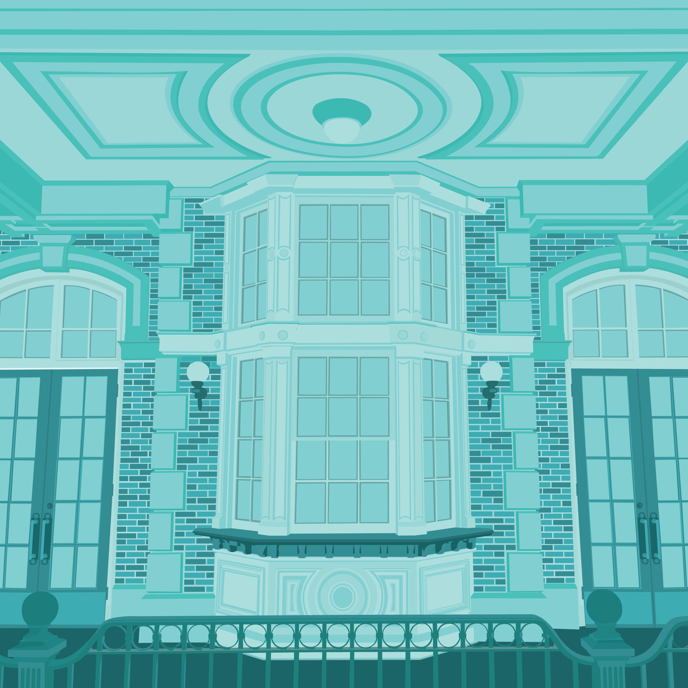

Project Description
- Highly detailed location photo recreated in Adobe Illustrator
- Reference image: Main Street, U.S.A. in Disney World
- Picture I took of the bay windows by the train station
- Used the pen tool for all of the line work
- Used live paint and the recoloring tool to create my color scheme
- Teal: I felt it had a calming effect
- The two renditions of the piece represent good and bad tint
- One has higher contrast between the different shades of teal
- The other has lower contrast